圖解 10｜一局發球方拿幾分，勝負幾乎已定？
完整研究：10_四國研究與制度 · 回到 首頁
📌 重點摘要卡
- 一句話核心： 發球回合得分與單打勝負最相關，但它是結果指標，不是原因。
- 關鍵數據： 男單 ≤8 分 → 100% 敗、≥13 分 → 100% 勝｜女單 ≤6 → 100% 敗、≥13 → 97.4% 勝｜日本過用傷 ≈ 外傷 3 倍
- 因果流程：
發球品質＋第 3 拍銜接➔發球回合得分率上升➔勝率上升（相關，非因果） - 跨域應用： 羽球訓練：每節 10–15 分鐘發接發套路，比賽記錄發球得分率。數據模型：決策樹（CHAID）分類與「相關 ≠ 因果」。IT 教學：用比賽數據做簡單決策樹。
❓ 先猜一猜
韓國研究分析了 BWF 國際賽男單、女單各 50 場，看 34 個比賽變項。與勝負最相關的是殺球數、失誤數，還是發球回合得分？ 答案：發球回合得分。
🎬 動畫：發球得分的勝負門檻

📊 四國研究的關鍵數字
| 國家 | 數字 | 意思 |
|---|---|---|
| 🇰🇷 韓國 | 男單 ≥13 分 → 100% 勝方 | 一局發球回合得分的決策樹門檻 |
| 🇯🇵 日本 | 過用傷 ≈ 外傷的 3 倍 | 青少年傷害流行病學（Miyake 2016）；高中生比賽受傷率最高 |
| 🇯🇵 日本 | 延遲回放 10–20 秒 | 場邊平板影片支援的做法 |
| 🇹🇼 台灣 | 前弓步水平力 +7.77% | 5° 外側楔形鞋 vs 對照鞋（相子元團隊） |
| 🇹🇼 台灣 | 學習曲線可能「先變差」 | 劉有德：動態系統的動作學習觀 |
🧭 發接發訓練怎樣放進課表
flowchart LR
A["每節 10–15 分鐘<br/>發接發＋前三拍套路"] --> B["比賽統計<br/>發球回合得分率"] --> C["找出弱點<br/>回到套路練習"] --> A🧠 延伸知識
📝 為甚麼「發球得分」不是原因？
「發球得分」是發球方贏下那一分的次數，是結果。贏球的人自然得較多分；研究只顯示它與勝負最相關，不代表只練發球就能贏。真正可以練的是發球品質＋第 3 拍銜接。
📝 技術改變期「先變差」是正常的
依動態系統觀點，舊動作像一個穩定的「谷底」；改技術時要先離開這個穩定狀態，表現可能暫時下降。評估新技術要看保留測驗（隔幾天再測）和比賽轉移，不要只看當天。
✅ 30 秒自我測驗
❓ 1. 男單一局發球得分 ≤8，研究中的勝負結果是？
100% 歸為敗方（觀察資料，不是因果）。
❓ 2. 日本青少年研究中，過度使用傷和外傷的比例大約是？
過度使用傷約為外傷的 3 倍。
❓ 3. 選手改技術後一週表現變差，應立即改回來嗎？
不一定。可能是學習過程的暫時退步，應以保留測驗和比賽轉移評估。